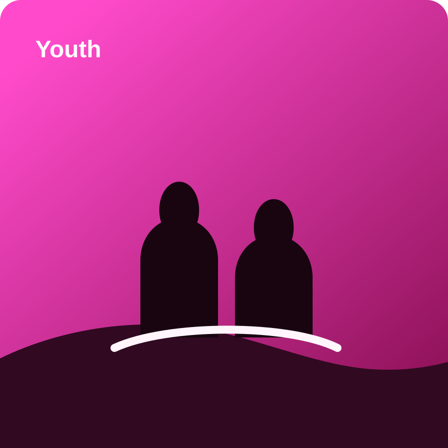

Bible Study Ministry
Guided studies that help members explore doctrine, discipleship, prophecy, and practical Christian living through the Bible.
Ministry Areas
Each ministry area is designed to help people know God more deeply, build stronger spiritual relationships, and respond faithfully to the needs around them.

Guided studies that help members explore doctrine, discipleship, prophecy, and practical Christian living through the Bible.
Dedicated prayer gatherings for worship, intercession, thanksgiving, and spiritual renewal in every season.
Meaningful Sabbath experiences centered on reverence, teaching, rest, community, and joy in the Lord.
A place for younger believers to be discipled, encouraged, and equipped to live faithfully in a changing world.
Sharing biblical hope through public witness, digital ministry, online content, and gospel-centered communication.
Responding to social issues with compassionate presence, support initiatives, and practical expressions of care.
Ministry Rhythm
Members come together for prayer, study, encouragement, and worship.
The Word of God shapes understanding, relationships, and spiritual maturity.
Believers serve with compassion and take the light of Christ into homes and communities.